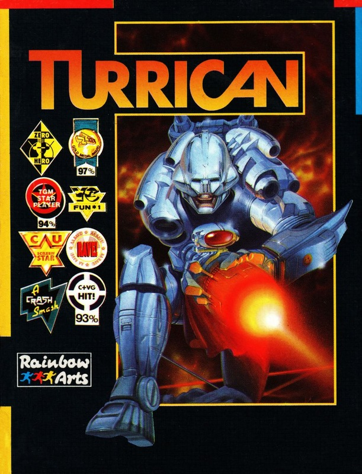
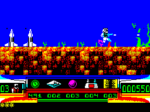

Turrican


{kind=link}

| Publisher: | Rainbow Arts |
| Price: | £9.99 / £12.99 |
| Year: | 1990 |
| Source: | CRASH, Issue 77 |

Long, long ago mankind lived in fear. Paranoia ruled them by day and horrific nightmares made sleep a dread by night. The cause was a three headed creature called Morgul with fantastic evil magical power who lived hidden away in its kingdom from where it infiltrated man’s mind. As humanity cowered, a brave hero called Devolon did battle with the beast and banished it to another dimension. For many years mankind slept soundly. But now the nightmares have returned with a ferocity that banishes everyone to their homes lest evil strike them. Morgul is affecting them even from the other dimension.

Only one man has the courage to stand up to his fears and attempt to once again banish Morgul from the lives of mortals: Turrican, skilled soldier of fortune, athletic and heavily armoured.
Turrican is set over five different worlds and 13 levels. Fight through creature-infested landscapes using your athletic skills and arsenal of weaponry — standard pulse-rifle, lightning beam, grenades, mines and energy lines. The last three are limited, so stocks must be regularly replenished and weapon power-ups collected. Collision with the weird denizens of Morgul’s realm lose you vital energy. Make use of the gyroscope mode (three times per life) and turn into an impervious and destructive ball. Extra weaponry can be collected as well as diamonds, 300 of which provide an extra life.
Trust Probe to come up with the goods: the sprites are colourful, nicely drawn and animated. Turrican himself looks well hard a range of weaponry to make Rambo jealous. Creatures and backgrounds are varied — there’s nothing I hate more in a game than the same sprite being used over and over again! End of level monsters and Morgul himself are great. All in all Probe and Rainbow Arts have produced one of the best Speccy games seen this year. Just wait for the sequel Apprentice.
MARK — 95%
Wow, it’s a long time since I’ve seen this much offensive weaponry in a game!! Turrican is pure blast-’em-up action all the way with a wonderfully detailed main sprite blasting the living daylights out of the enemy hordes. My personal favourite is the Alien world which Is obviously inspired by the Giger-esque monsters from the Ridley Scott movie. The backdrops are as colourful and varied as the character sprites. Turrican is a no holds barred shoot-’em-up that no joystick mangling fan should miss.
NICK — 93%
RATING
Hurricane strength arcade blast-’em-up of the year guaranteed to give you nightmares!
| Presentation: | 90% |
| Graphics: | 88% |
| Sound: | 80% |
| Playability: | 90% |
| Addictivity: | 92% |
| Overall: | 94% |